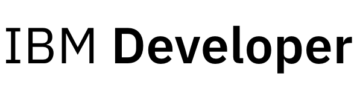

Data Gathering

Global Lithium Production
The Global Lithium Production dataset was extracted from the Our World in Data website. The Energy Institute Statistical Review of World Energy analyzes data on world energy markets from the previous year, and Our World in Data consolidates data originally derived from the reports produced. The dataset provides information on global lithium production, including data for major producing countries and aggregations at the regional, continental, and global levels. Lithium production is measured in metric tons. The dataset covers the period from 1995 to 2022.
While the dataset includes global data, this analysis will focus specifically on the evolution of lithium production, with a strong emphasis on the U.S. This approach allows for a more in-depth analysis of the growth and fluctuations of this resource, while assessing the impact on the economy.
Commodity Price
- Uranium
- Crude Oil
- Natural Gas
- Coal
- Renewable Energy
- Biofuels
- Electricity.
The commodity datasets play a key role in the goal of comparing lithium to other energy sources. This initial analysis focuses primarily on price comparisons, with future analyses to include consumption patterns. The commodities included in the analysis are …s.

Lithium News
Source: News API | Python
The Lithium News dataset is an essential resource for the project to understand the media perspective on the evolution of the lithium market. The News API allows the collection of text data from news articles related to lithium. This platform aggregates information from a variety of media sources. Given the focus of the project, the text data collection is primarily focused on U.S. media resources that have published articles in English. This approach ensures that the dataset provides relevant insights to address the project’s questions.
The date range for the API is variable, depending on the amount of data available at the time the scraping is done. To optimize data collection and maximize the date range for article collection, a special function has been developed to adjust the number of days. This approach allows for the most current and broadest data collection.

Lithium News - Sentiment Analysis
Source: IBM Watson API | Python
The Sentiment Analysis Dataset for the Lithium News is a crucial step in the analytical process of the project. It enriches the Lithium News dataset collected in the previous section. To improve our understanding of the lithium market perspective, we perform a sentiment analysis on the content of the news articles.
To do this, we will use the IBM Watson API, a tool designed to perform sentiment analysis on text data. The API allows us to process and analyze the text data and provide insights into the sentiment and tone of the articles.
The main objective of this analysis is to understand how the perspective on the lithium market has evolved. By evaluating the results obtained on the media news, we aim to determine whether the news articles have shown a bias towards a more positive or negative perspective. This allows us to identify potential shifts in sentiment that could impact the industry in the future.